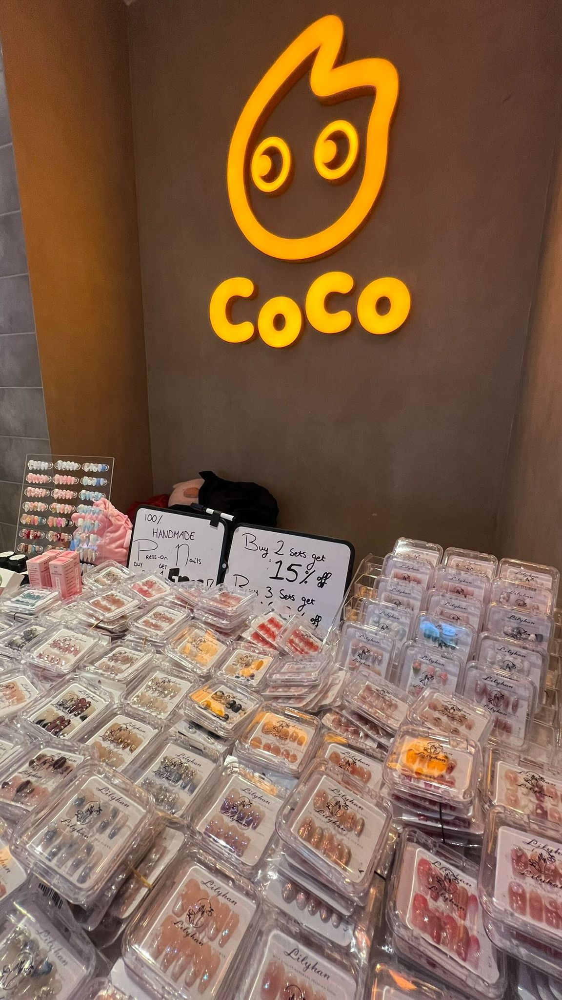

Wie zijn wij?
Wij zijn een small press-on business met een kleine team die alle press-on nails zelf maken. We proberen zo veel mogelijk sustainable te werken door onze ecologische voetafdruk te verminderen:
- Zo min mogelijk plastic te gebruiken
- Zo min mogelijk plastic te gebruiken
- Zelf gemaakt = geen fabriek en non-ethisch werkwijze.
- Geen schadelijke chemicaliën.
- Geen onnodige energie verbruik (geen uv lamp nodig).
- Handgemaakte press-ons kunnen meerdere keren worden gebruikt, waardoor je minder vaak vervanging nodig.
Step by step tutorial
- Duw de nagelriemen naar achter.
- Buff de oppervlakte van je nagel met een nagelbuffer (zit in de kit).
- Neem je nagel en press-on af met een alcoholdoekje (zit in de kit).
- Pak de adhesive tabs en plan ze aan de nagel en duw de nagel 10 sec. 1-2 mm van de cuticle.